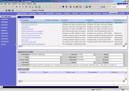

| LevSelector.com |
Siebel - learn
- intro
- learn
Siebel
| Volume 1: - #v1.sec1.mod1-3
- #v1.sec1.mod4-6
- #v1.sec2.mod7-9
- #v1.sec2.mod10-13
- #v1.sec3.mod14-18
Volume 2: - #v2.sec4.mod19-21 - #v2.sec4.mod22-24 - #v2.sec4.mod25-29 - #v2.sec4.mod30-33 - #v2.sec4.mod34-37 Volume 3: - #v3.sec5.mod38-41 - #v3.sec6.mod42-49 - #v3.sec7.mod50-54 - |
| intro | home - top of the page - email |
Siebel is a company producing a CRM product (CRM = Customer Relationship Management). Founded in 1993 by Thomas Siebel. Grew in 1995-99 from 13% to 69% market share !! Consumed most its competitors and became de-facto market leader.
Main product - "Siebel eBusiness Applications" - a set of 114 components,
organized into 16 separate product lines.
Turn-key specific solutions: eFinance, eInsurance, eCommunications,
eEnergy, ...
Siebel is flexible - but not very flexible, because it consists of
pre-built blocks. It is more like MS Word, than like programming language.
Typical Siebel Screen - click to see 100% size:

One logical database (~1700 tables).
One set of configuration tools (Siebel Tools)
Client interfaces: MS Windows (siebel.exe), Java, HTML
Siebel Server - application server (talks to clients and DB, talks
to other servers and messaging services)
Siebel connectors to backoffice (ERP, Supply chain, Procurement, Legacy,
etc.)
Siebel Anywhere
Siebel provides services ("Siebel Global Services") - SupportWeb, Expert Services, University, End-user and partner education, consulting, etc.
Deployment options:
Connected Client - client application talks directly to central
DB and App.Server
Mobile & Handheld Clients - store local database
Thin & Wireless Clients - via Internet
| What you need to learn Siebel: | home - top of the page - email |
What you need to learn Siebel:
| 1. Siebel Client CD & BookShelf CD
2. Set of 3 volumes "Siebel eBusiness Essentials" + 1 volume of Labs
for it.
3. Training on CD (Siebel University): "Siebel eBusiness Aplications", "Siebel Call Center Fundamentals", etc. |
Siebel has their own training (costs thousands of dollars). And it has documentation manuals which come with software. But not any technical manuals in book stores. The situation has changed a bit recently. I saw books on amazon.com:
Implementing Siebel - by Vivek Kale ($59.00)
Migrating Siebel Database from DB2/Oracle for Nt to DB2 for Os/390 - by IBM
Redbooks (2001)
Siebel 2000 Database Implementation on OS/390 Using NT Siebel Servers (IBM Redbook)
You can also search for siebel on IBM site:
http://publib-b.boulder.ibm.com/Redbooks.nsf/redbooks/
and even download them for free:
http://www.redbooks.ibm.com/redbooks/pdfs/sg246211.pdf
This web site is a good place: http://siebel.ittoolbox.com
| v1.sec1.mod1-3 | home - top of the page - email |
Some key words:
SRF - Siebel Repository File
SSE - Siebel Sales Enterprise
Siebel eBusiness Enterprise - suite of many products:
| Industry applications: eFinance,
eInsurance, eCommunications, eAutomotive, eEnergy, ePharma, ePublic Sector,
eConsumer Goods, eApparel & Footware, eTechnology
.COM Applications: eSales, eMarketing, eService, eChannel, eTraining Call Center: Call Center, Service, Telesales Field: Sales, Field Service, Configurator, Phone, HandHeld, Pricer Channel: eChannel Marketing: Marketing |
Siebel MidMarket Edition - simplified version, web-based architecture
S.eBusiness applications have a common structure and look and feel. Call Center is used as a sample application for training.
Common eBusiness Entities:
| Account - represents current or
potential client, partner or competitor. Has an account team (permitted
to view/change data)
Opportunity - potential revenue-generating event. Potential revenue, probability of completiong, ending date, sales methodology. Has a sales team (permitted to view/change data) Service Request - a request from customer (severity, priority, status). Is owned by ONE employee (doesn't have a team). Contact - external individual (name, email, title, ...). Has an access list (who can view/change the data). Activity - who should do the task, start and due date. Can be associated with an Account, Opportunity, Service request, and/or Contact. |
Organization - group of users (inside: sales, marketing,
cust.service. outside: Channel Partners, Customers, Prospects)
Select: Start -> Programs -> Siebel Enterprise Applications 6.0
-> Siebel Call Center
Logon: (username, password, data source)
Help -> Technical Support (to view connection information).
File->Connect - to logon as a differen user
File->Change Password - to change password
User Interface structure: Application -> Screens -> Views -> Applets
Applets: List, Form, Tree
Views: List, Detail, Explorer
- List View - list on top, form on bottom (like
MS Money)
- Detail View - Form on top, list of related items
on bottom
- Explorer view - tree on left, list on right (like
MS Windows Explorer)
Navigating:
Select screen from menu or from Tab Bar on the top.
Then select view from menu on the left.
Click inside an applet to select it (or use Ctrl + or
use special toggle-button)
Siebel window elements:
Title bar
Menu Bar
Tool bar (and query list)
History/Threads bar
Horizontal tab bar - to select screens
Left view bar - to select a view
During navigation a query is created to load data for ~1 screen only.
Navigatin between records in a list:
- use arrows buttons in the toolbar
- use vertical scrollbar on the right
- use alphabet bar on the bottom
- mouse and arrow-keys
Navigating inside a record: mouse, Tab & Shift-Tab
Drilling Down: some fields may be made links to navigate
to a different view.
- click on them
- select and press Ctrl-E
- right-click and select from the pop-up menu
- double-click on the row indicator
Thread Bar - tracks your path through the views (history) - and allows
you to return to previous views (threads).
Help menu - has info about Record (who/when created/modified, version
info about SRF file, configuration info)
Context-Sensitive help - select arrow/queston mark from toolbar to
activate this feature.
Navigation in thin client is different:
List views and Detail views are read-only.
List views - no form appears on the bottom.
Entry forms function differently. You can do only one record
at a time.
| v1.sec1.mod4-6 | home - top of the page - email |
Users (employees) - loginID, organization, at least one
position,
at least one responsibility
Visibility: which users can see which views and which records
record access - is controlled by position (, organization, login)
view access - is controlled by responsibility
record access:
| Some records are personally owned (service requests, quotes, activities,
contacts) - by LoginID
Some records are team owned (Opportunity, Account, Contact, Campaign) - by position - An employee may have more than one position. - One position may be shared by many employees (then one of them is "Active"). Primary position on a team - manager record access rule active ( view all data in the team, merge/delete records, forecast an oportunity). Change position: File->Change Position Primary position occupied - default (login) To view positions for an employee: Screens->Application Administration->Employees , and then press on [...] near position field in the form Some records are restricted by Organization(s) - for example grouping
geographically (US, Europe, etc..)
|
View Access:
| View Access - based on responsibility = job function or role.
A user may have one or more responsibilities - thus they will see a UNION of all the views associated to their responsibilities View types: - My Personal View - user is the owner, only he has access - My View - shows records for a team (of which the user is a member) - My Team's View - manager can see records of his team members - All View - records for the organization, where primary position has been assigned to the team - All Accross Organizations View - records for all organizations, where primary position has been assigned to the team - Marketing Administration View - ALL records in the database (even those without valid primary or owner) Screens->Marketing Administration-> |
Modifying data:
| Inserting/Adding/Copying Records:
buttons on the toolbar (add new, insert, copy) menu: Edit->Insert Record (Ctrl-i), Edit->Add New Record (Ctrl-N), Edit-> Copy Record (Ctrl-B) right-click - select from popup menu (copy or new) The data will be committed to the database as soon as you move from this record (select another record or another area on the screen) Note: for easier data-entry, many fields have "Field Control" - a button at the end. Pressing it pop-ups a list or a date selector or a calculator or a multi-line edit window, etc. Add multiple values - using MVG (Multi-Value Group) applet for one-to-many
relationships
Delete record, Undo/Redo (from Edit menu)
You may attach some external documents to records using an Attachment applet. Just drag and drop it (like attaching files in MS Outlook). Note, though, that Siebel will make and attach a compressed copy of the document as it is at the moment. If the documents changes - Siebel will still have the old version. Also, If the document is very large - this may create memory problems. Use Help->About Record to see who/when created and modified it. |
Query Operations:
| Query - retrieves information from a database (Case sensitive or not
- switch for all application)
QBE - Query By Example To run a query: create a new query, define query criteria - and execute it To create a new query: Click on the magnifying glass button in the toolbar (or press Ctrl-Q or select Query->New Query) Enter query criteria in the list or in the form on the screen Execute query by pressing on the second mugnifying glass icon, or select Query->Execute Query, or simply press ENTER. To query MVG field(applet)
Sorting by a column - select a column and press a button on the toolbar.
Modify query: Query->Refine Query
Cancel a query which is running too long:
Predefined queries (by Sys.admin for each screen)
Additional query operators: <= <> OR * (wildcard) (for example *Ma* ), etc. (see Help for Operators for Queries) Find command (and a button on the toolbar) |
| v1.sec2.mod7-9 | home - top of the page - email |
Siebel Application Environment:
database, file system (to be accessed by clients), clients (dedicated,
mobile, thin):
- dedicated client doesn't store data
localy. It is connected directly to database adn file system
- mobile client - operates off-line,
uses local database to store subset of data, periodically accesses the
server to synchronize the data
- thin client - in the browser via
internet, accesses data via server.
There are several different thin clients:
- HTML - shows interface using HTML in a standard browser, needs
web server
- Java - stand-alone Java applet
- WML - wireless, using WAP (Wireless Application Protocol)
- Thin Client for Windows - and ActiveX control or Netscape Plugin
- to work in a browser.
Siebel Enterprise Server - one or more servers working together.
Execution engine (siebel.exe)
SRF file (Siebel Repository File) - contains the application configuration
(~16 MB).
CFG file - small configuration file (10KB).
Multi-layer Architecture:
User Interface
Object Manager
Data Manager - between Object Manager and database,
generates real-time SQL,
Data Exchange Layer - separate DLL for each target
database
Server Architecture:
- Gateway server - load balancing (option - using
Resonate Central Dispatch)
- Enterprise server - group of several Siebel servers
running server components (import/export data, database configuration,
processing for thin and mobile clients). Each Siebel Server runs on NT
service and uses ODBC (or as Unix Daemon).
- Database & File system
Dedicated client - starts with siebel.exe using command line parameters, .cfg and .srf files. Directly talks to the database adn Siebel File system using native drivers, talks to Gateway server to determine correct Siebel server to access if a component is desired.
Mobile Clients - similar to dedicated client, but instead of talking to the remote database server - it talks to local (database & file system), which are getting synchronized (from tme to time) with the server (via Siebel Server).
Windows & Java Thin clients - from the browser launch tclient.htm (on the server). This file knows where Gateway server, Enterprise Server, object manager component, and Siebel server are. Accesses server-side .cfg and .srf files.
HTML clients: browser <=> web server <=> ... <=>
object manager component.
start with html page which specifies a .swe page,
which invokes SWSE (Siebel Web Server Extension) - which defines
where .cfg is ...
WML client: WAP => web server ...
Siebel server side: 4 main parts: Gateway server, Siebel Server, Database, File System. Can be implemented on one machine - or spread across multiple boxes.
Installing Siebel Software:
Create Siebel Service Owner Account and Siebel Monitoring Account.
Create database
Create File System (a directory on disk with sufficient space)
- must be accessible from other machines running Siebel Servers and dedicated
clients, must support long and case-sensitive filenames.
NOTE: use short directory names, avoid spaces.
Install and verify:
- Gateway server (invoke gtwysrvr installation program,
then inspect directory and GTWsetup.log file),
- Enterprise and Siebel Servers (invoke siebsrvr installation
program, then inspect directory and SRVRsetup.log file),
- Database Server (invoke dbsrvr installation program,
run grantusr.sql script to create datbase users, edit and run install.ksh
script to create database schema and populate seed data, edit and run imprep.ksh
script to populate repository data, then inspect everything),
Example:
| Destination Directory: | C:\sea601\dbsrvr |
| Siebel Server Directory | C:\sea601\siebsrvr |
| Database User/Password | SADMIN/SADMIN |
| Database/Tablespace Owner | SIEBEL/SIEBEL |
| ODBC System Datasource | SiebSrvr_siebel |
| Destination Directory: | C:\siebel00 |
| Siebel Remote Server | S1 |
| File System: | HQ\G1\c:\siebfile |
| Database Machine Name: | D1 |
| Database/Tablespace: | siebeldb |
| Gateway Machine Name: | G1 |
| Enterprise Server Logical Name: | siebel |
ODBC User Data sources:
| SAE Local Db c:/siebel00
SAE MMerge c:/siebel00 SAE Text c:/siebel00 SAE Search c:/siebel00 SAE MSQL c:/siebel00 |
- Windows Thin Client (invoke thinclient installation program,
then inspect directory and WINMTCLsetup.log file),
- Siebel Web Engine (invoke eappweb installation program on
the web server machine, then inspect directory and EAPPSsetup.log file).
| Destination Directory: | C:\sea601\SWEApp |
| Gateway Machine Name: | G1 |
| Enterprise Server Logical Name: | siebel |
| Siebel Server Logical Name | siebel_S1 |
| v1.sec2.mod10-13 | home - top of the page - email |
Section 2 mod 10: Server Manager.
- enable/disable/startup/shutdown components, start/stop/resume tasks, monitor status/statistics, set parametrs for components/tasks, manage Siebel Enterprise, assign components to execute on specific Siebel servers.
- start SM from client or from DOS prompt (srvrmgr /g <gateway> /u <user> /p <password>)
- SM connects to gateway – and to all Servers within the enterprise – and run tasks on them.
Server Component = a program which executes as a task on a server (for example, components to import/export data, processing to support clients, configuring te database, enforcing bus.rules).
S.Components can be arranged into groups – allowing to enable/disable, … all components in a group at once.
Server parameters: static (upon server restart) and Dynamic.
Levels of parameter settings: Enterprise, server, Component,
Component definition, Task.
Task can execute in 3 run modes: background, batch, interactive.
S. Component can be in 4 states: Online, Running, Offline, Shutdown.
Select Screens > Server Administration > Servers -> Server Components
Then select component to modify and click the appropriate action
Screens > Server Administration > Servers -> Server Tasks
Click New, parameters, start
Look at the task column to monitor
Drill down into it to see the log
=============================
Section 2 Mod. 11 Creation an Organization
Page 256
Define hierarchy, divisions, positions, responsibilities, set up employees
Screens -> Application Administration -> Divisions
Screens -> Application Administration -> Positions
Screens -> Application Administration -> Responsibilities
Positions – define data access, Responsibilities – devine views access
Define employee:
Screens -> Application Administration -> Employees -> Employees
View
Define user: Last and First names, and Login name, Responsibilitie(s)
and Position(s)
=============================
Section 2 mod 12 Using Siebel Datasources
DataSources: Local, Server, Sample – specified in *.cfg file (as ODBC datasources), can be selected in the login screen.
Sample database can be SQL Anywhere (.dbf file) or MS SQL Server (.mdf file).
Attention: selection of the data source is done by first 8 char of te file name (NOT by full path).
=============================
Section 2 mod 13 Defining a Development Environment
Development -> QA Testing -> Production
Data in Siebel database:
Seed data – from install.ksh script
Repository data = from imprep.ksh script – initial definitions
for objects
User data = supplied by user
Modify object definitions, create custom .srf file, use Enterprise Integration Manager server component to bulk-transfer data in/out Siebel. Use Assignment Manager and Workflow Manager server components to automate business rules.
Backup srf file into a flat file using script exprep.ksh
| v1.sec3.mod14-18 | home - top of the page - email |
=============================
Section 3 mod 14 Exploring the application
Entity Relationship Diagram (ERD):
Account : Contact, Opportunity, Product, Activity
One2one and one2many (1:1 and 1:M) relationships between entities
Relationships in reverse direction
Service request has 1 or more product defects
Product defect has 1 or more Service Requests
=============================
Section 3 mod 15 Object definitions behind a Siebel Application
Help -> About View – to see UI and business object definitions
(enable te “About” view by adding the /x switch in the command
line
UI: Screen, View, Applet
Business Component – one per applet
Business Object – one per view
Data Object definitions – include tables and columns, provide a representation independent of underlying physical database.
Business Component fields map to fields of one or more database table(s).
Business Object – represents a major functional area (Opportunity,
Account, Contact) – a collection of business components (one of bus. components
is the master/driving)
One bus. Component can be used in many different object contexts.
Applet – occupies a portion of the Siebel application window, allows access to te data of __ONE__ business component for viewing, editing and modifying data.
View – a collection of applets that appear onscreen at the same time. – maps to __ONE__ bus. Object. (and each applet maps to a bus. Component in tht bus. Object).
Screen – a collection of related views
Application – a collection of screens
Page 330 – useful diagram of 3 layers: UI, Bus. Object, data objects:
List column or control =- applet =- View =- screen =- application
Field
=- bus.component =- bus.object
Column =- Table
=============================
Section 3 mod 16 Using Siebel Tools to Examine Object Definitions
Object definitions (user-defined names, properties, numeric values, etc.) – stored in the Siebel repository, are created and edited using Siebel Tools.
In Siebel Tools:
on the left – Object explorer and properties window. (View -> Properties
Window)
On the right – Object list editor (looks like regular list applet)
Some object types contain child object types (for example, Applet type
has Control child type)
You can see them both at the same time.
Object explorer has 3 tabs: Types (normal hierarchical view), detail ( ), flat (flat list regardless of hierarchy).
Repository -> Find in Repository – to search object types
View -> Applet Editor - to design applets
View -> View Details – to see columns and tables behind single value fields, and business components behind multi-value fields
=============================
Section 3 mod 17 The Siebel Data Model – Tables
Tables, Columns, Indexes, User Keys
Primary key – a column that uniquely identifies each row in a table, named ROW_ID (created and maintained by Siebel).
Tables - ~1700 tables in 3 major types: Data (S_xxx), Interface (EIM_xxx),
Repository ()
Examples od data tables:
S_ORG_EXT – Account
S_SRV_REQ – Service Request
S_CONTACT – Contact
S_OPTY – Opportunity
S_EMPLOYEE, S_POSTN, S_RESP, S_ORG_INT
Interface tables (EIM_xxx) – are staging tables for importing/exporting data, are used only by the Enterprise Integration Manager server component.
Repository tables – contain application definitions for one or more Siebel Applications, are edited using Siebel Tools.
All tables have several system columns maintained by Siebel.
User Key – specifies one or more columns that must contain a unique set of values. Prevents users from entering duplicate records based on the user key.
Custom indexes – can be created by configurators
SQL spooling - /s “d:\sqlspool.doc” - is recreated at the application start and appended while it is working.
You can inspect his file.
You can generate a report (Tools: Report -> Tables)
=============================
Section 3 mod 18 The Siebel Data Model – Relationship between
Tables
Xxx_ID
Foreign key
1:M relationships
M:M relationships
Intersection table
To locate an intersection table (in tools):
Select the flat tab in the Object Explorer
Re-arrange the columns to display Parent Table, Name, Foreign
Key Table, and User Key
Execute a query for which [User Key Sequence] = 1 or 2
and {Foreign Key Table] = S_CONTACT or S_EVT_ACT
Sort results by Parent Table – and look for a Parent table which appears
2 times (in 2 adjacent rows) where the foreign key table is S_CONTACT
in one row and S_EVT_ACT in the other row.
Verify tables and foreign keys by inspecting the generated SQL.
| v2.sec4.mod19-21 | home - top of the page - email |
| v2.sec4.mod22-24 | home - top of the page - email |
| v2.sec4.mod25-29 | home - top of the page - email |
| v2.sec4.mod30-33 | home - top of the page - email |
| v2.sec4.mod34-37 | home - top of the page - email |
| v3.sec5.mod38-41 | home - top of the page - email |
| v3.sec6.mod42-49 | home - top of the page - email |
| v3.sec7.mod50-54 | home - top of the page - email |
| common environment | home - top of the page - email |
Install Siebel Client (includes siebel.exe and a bunch of DLLs).
Install Siebel tools - for development
Use "Client Disk" and answer some questions:
Server: SOMESERVER01
Siebel File System: SOMESERVER01\FS
Database Alias (Connect string):
SIEBDEV
Table Owner: SIEBEL
copy cfg file (~ 10 KB)
copy srf file (~16 MB) - or compile it ( takes hours)
Start application like this:
C:\local\data\sea\client\BIN\
siebel.exe /c T:\siebel\
mytest.cfg /d QAServer
Example of login:
: sadmin
: pleasechange
: QAServer
Starting development tools:
C:\sea630\tools\BIN\siebdev.exe
/c "c:\sea630\tools\bin\ tools.cfg"
Example of tools login:
: sadmin
: pleasechange
: local
===========================================
Hierarchy:
- Application > Screens > Views > Applets > (fields, buttons,
tree)
{kind=link}